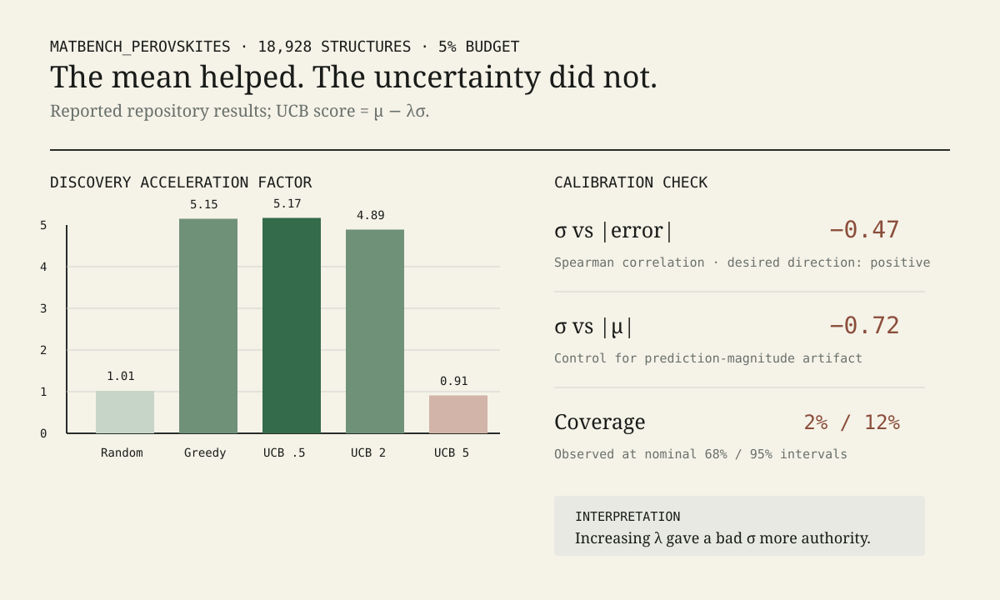

When uncertainty makes active learning worse
The surrogate was useful. Its confidence estimate was not.
Claim. On a static screening benchmark over 18,928 DFT-labelled perovskite structures, a frozen pretrained M3GNet formation-energy surrogate found the bottom-5% target set about five times as efficiently as random ranking at a 5% budget. But its readout-level MC-dropout standard deviation was negatively correlated with absolute prediction error (Spearman −0.47). Giving that uncertainty signal more weight drove acquisition performance from DAF 5.17 at λ=0.5 to 0.91 at λ=5—below random.

The result I expected to write
The motivating idea was standard uncertainty-aware acquisition. For each structure, a pretrained MatGL model produces a mean prediction μ and MC-dropout standard deviation σ. Because lower formation energy is better, an optimistic UCB-style rule ranks candidates by μ − λσ: the mean exploits candidates predicted to be stable, while uncertainty gives unexplored candidates a bonus.
MC dropout has a legitimate theoretical lineage. Gal and Ghahramani framed dropout inference as an approximate Bayesian method for extracting model uncertainty without training a separate probabilistic model. The interesting engineering question was not whether MC dropout can ever be useful; it was whether this particular σ was informative enough to spend an acquisition budget on.
The experiment initially looked encouraging. Greedy ranking by μ produced a DAF of 5.15 ± 0.04. UCB with λ=0.5 produced 5.17 ± 0.01. It would have been easy to publish the tiny numerical improvement and move on.
Instead I increased λ.
The dose response is the result
| Strategy | Stable-target found | DAF | Top-100 recall |
|---|---|---|---|
| Random | 49.8 ± 3.7 | 1.01 ± 0.07 | 5.0% |
| Greedy (μ) | 254.0 ± 1.8 | 5.15 ± 0.04 | 43.2% |
| UCB λ=0.5 | 254.8 ± 0.4 | 5.17 ± 0.01 | 43.8% |
| UCB λ=2 | 241.0 | 4.89 | 41.0% |
| UCB λ=5 | 45.0 | 0.91 | 1.6% |
The low-weight UCB result is effectively the greedy result. The more diagnostic observation is monotonic in authority rather than in headline score: as σ matters more to the ranking, the policy gets worse. By λ=5 the uncertainty term has overwhelmed useful information in μ and sends the screen below random performance.
I tested σ directly
The acquisition result alone cannot tell us why UCB failed. So the next pass measured whether σ behaved like an error-ranking signal. The calibration module computes correlation with absolute error, a control correlation with prediction magnitude, binned RMV→RMSE reliability, empirical interval coverage, a miscalibration area and Gaussian NLL.
| Diagnostic | Observed | Useful direction / reference |
|---|---|---|
| Spearman corr(σ, |error|) | −0.47 | positive |
| Spearman corr(σ, |μ|) | −0.72 | near zero as a control |
| Reliability slope | −1.12 | +1 |
| Miscalibration area | 0.43 | 0 |
| Coverage at nominal 68% | 0.02 | 0.68 |
| Coverage at nominal 95% | 0.12 | 0.95 |
The strongest result is the sign of the first statistic. Larger σ tended to accompany smaller absolute errors. For acquisition, that means a larger exploration bonus systematically favors examples that this uncertainty mechanism has not demonstrated are more likely to be wrong.
The magnitude correlation is also a warning. σ is strongly associated with |μ|, suggesting that part of the stochastic spread may reflect where the prediction sits rather than independent knowledge about error. That is a mechanism hypothesis, not a causal identification; the experiment does not isolate exactly why the readout-level dropout behaves this way.
What exactly was benchmarked
The code is in active-materials-discovery ↗.
benchmarks/run_perovskites.py loads all 18,928 matbench_perovskites structures, defines the bottom 5% of formation energies as the screening target, scores the pool with 20 MC-dropout passes, and evaluates random, greedy and UCB rankings across five seeds. benchmarks/calibration.py runs the uncertainty diagnostics. The acquisition and DAF definitions are in amdisco/acquisition.py.This is important: the benchmark is a static acquisition screen, not a full iterative active-learning loop. The pretrained surrogate is not retrained after labels are acquired. Existing labels are used retrospectively to ask whether a ranking policy would spend a fixed budget efficiently.
The target is also a proxy: “stable” here means the bottom 5% by formation energy in matbench_perovskites. It is not the same thing as thermodynamic stability against competing phases. Matbench Discovery explicitly highlights the distinction between formation energy and stability; the WBM benchmark uses hull-based evaluation for that reason.
So the result should be read as a test of acquisition behavior and uncertainty quality on this candidate distribution—not as evidence of autonomous materials discovery or a claim about synthesis success.
The old explanation was too convenient
An earlier manuscript in the project described a separate WBM/CHGNet result where greedy and UCB were similar, and interpreted that as evidence that a strong pretrained surrogate made uncertainty redundant because the model was already well calibrated. The later calibration study does not directly refute that WBM experiment—it uses a different dataset and model configuration—but it does expose a flaw in the inference.
Greedy ≈ UCB does not demonstrate calibration. It can also happen when σ contributes almost nothing, when μ dominates the score, or when uncertainty is bad in a way that a small λ does not expose. Calibration has to be measured directly.
That changes the broader conclusion I am willing to defend. The useful principle is not “foundation models make uncertainty unnecessary.” It is:
This failure is plausible in the wider literature
The original MC-dropout work establishes a principled approximation, not a guarantee that every dropout placement will be calibrated on every distribution. More recent work on neural-network interatomic potentials makes the same caution empirical: Kurniawan et al. report cases where predictive uncertainty plateaus or even decreases while errors grow out of distribution. That does not validate my numbers, but it makes the failure mode less surprising.
Likewise, Matbench Discovery was created partly because materials models need evaluation tied to the actual discovery objective rather than generic pointwise accuracy alone. The same philosophy applies one level down here: an uncertainty estimator should be judged by whether its uncertainty tracks error and improves the decision rule, not by whether it emits a nonzero σ.
The strongest counterargument
The strongest objection is that this is a failure of this uncertainty construction, not of uncertainty-aware acquisition. I agree.
The wrapper keeps the expensive graph backbone deterministic and injects stochasticity into the readout, an engineering choice that makes uncertainty cheap enough to compute over large pools. That same choice may make σ too shallow to represent epistemic uncertainty in the learned structure representation. The task is also out of distribution for the pretrained model, and the “bottom 5%” proxy differs from hull-based stability.
A deep ensemble, shallow ensemble, latent-distance method, dropout placed inside learned features, or a model explicitly trained for calibrated uncertainty might behave very differently. Indeed, recent comparative MLIP-UQ work finds substantial method- and regime-dependence.
So the article title is deliberately conditional: uncertainty makes active learning worse when the uncertainty estimator is wrong and the acquisition rule gives it enough weight.
What I would test next
The zero-cost research loop does not justify inventing new results, so these remain proposed tests rather than conclusions:
- Freeze the backbone and train a small ensemble of independent readout heads, then compare σ↔error correlation against MC dropout.
- Move stochasticity into hidden features rather than only the scalar readout.
- Run leave-one-chemistry-out splits and ask whether uncertainty increases where prediction error increases.
- Repeat on WBM with hull-distance targets and Matbench Discovery metrics before generalizing to crystal-stability discovery.
- Compare acquisition curves across λ only after each UQ method passes a calibration gate.
What would change my mind?
I would revise the conclusion if repeated runs showed the −0.47 association was unstable, if a corrected implementation made σ positively track error, or if UCB retained its advantage as λ increased under the same benchmark. I would also narrow the claim further if the effect disappeared on modest changes to dropout placement or candidate chemistry.
Conversely, if independent UQ methods repeatedly produced the same pattern—useful μ, uninformative σ, and degradation as uncertainty weight increases—the result would become evidence about the task/model regime rather than one estimator.
The engineering rule I kept
Uncertainty estimation is an interface between a model and a decision. That interface deserves its own tests.
A surrogate can be good enough to rank candidates while being bad at ranking its own mistakes. A small UCB coefficient can hide that fact because the mean remains dominant. Turning λ up was effectively a stress test: it asked what happens when the system actually trusts the quantity we named uncertainty.
Active Materials Discovery repository ↗
Perovskite screening benchmark ↗
Calibration benchmark ↗
Calibration metric implementation ↗
Merged MatGL MCDropoutWrapper PR #801 ↗
Research context
Gal & Ghahramani (2016), Dropout as a Bayesian Approximation ↗
Riebesell et al. (2025), Matbench Discovery ↗
Kurniawan et al. (2025), comparative UQ for neural-network interatomic potentials ↗
Evidence classes
The reported DAF, target counts and calibration statistics are observed outputs recorded by the project. The explanation that readout-level dropout is too shallow is a mechanism hypothesis. Proposed ensemble/OOD experiments are future tests. No claim here relies on a paid experiment.
Revision log
v1.0 — initial publication; narrowed “active learning” to static acquisition screening, separated point-prediction quality from calibration, and treated the high-λ degradation as the central negative result.